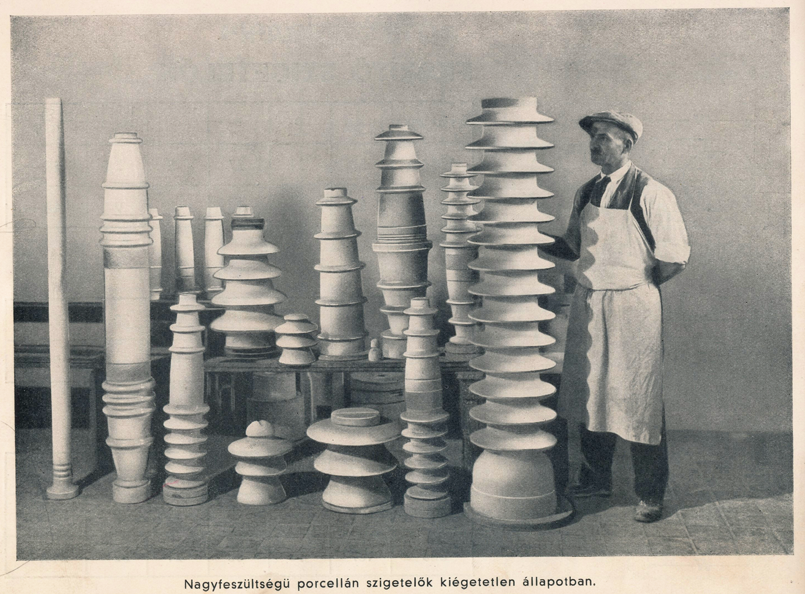

Drasche
(1838-1949)

A Drasche Henrik alapította gyár az 1838.-as nagy pesti árvíz után Alois Miesbach X. Külső Jászberényi út 41. téglagyárának kibővítése révén jött létre. 1846. és 1908. között kizárólag tégla, tetőcserép és keramit útburkoló kockákat gyártottak.

A társulat a fajansz- és porcelángyárat 1908.-ban hozta létre. benne falburkolatokat, műszaki- és egészségügyi porcelán árukat készítettek.
A díszműárugyártásban kezdetben terveik nagy hasonlóságot mutattak a Zsolnay gyár fajanszaival, de más vevőközönséget céloztak meg, ezért olcsóbb tárgyakat készítettek. A díszművek gyártása - bár erről pontos adatok nem álltak rendelkezésre - a húszas évek elejéig tarthatott.


1936-ig - a Porcelángyár újraindításáig- megint csak ipari és egészségügyi árut termeltek.
1936-tól ismét beindult a díszműgyártás.

A gyárat 1941.-ben hadiüzemmé nyilvánították, majd 1944.-ben súlyos bombatalálat érte. A termelés szovjet parancsnokság alatt 1945-ben indult be újra. 1949.-ben a gyárat államosították és először Drasche Porcelángyár NV-re, majd néhány hónappal később Kőbányai téglagyár névre keresztelték.